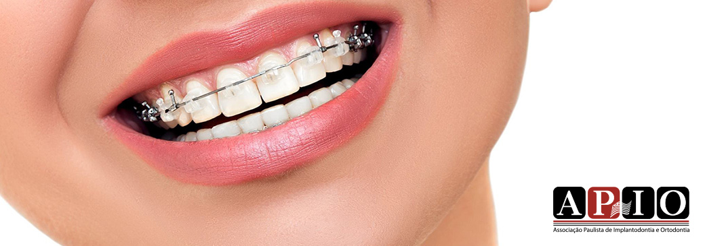
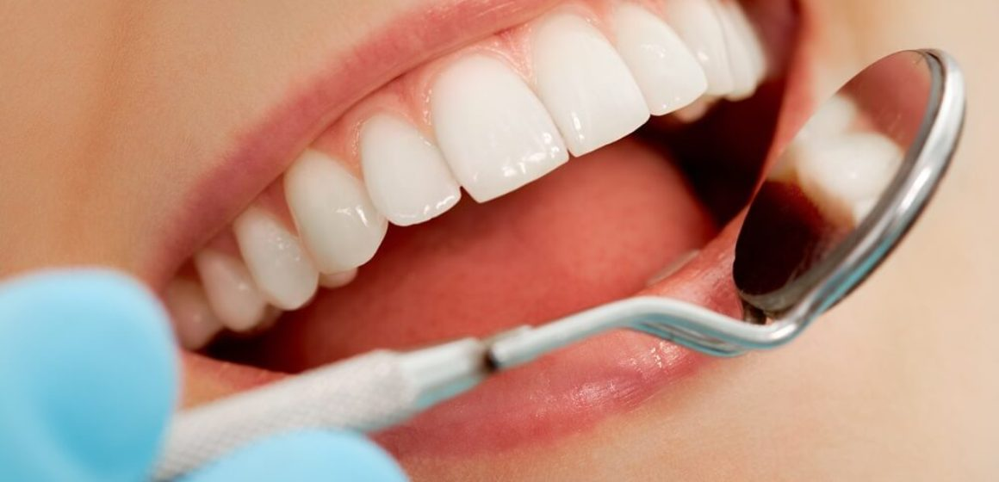

Medicina Dentária Generalista

O QUE É A MEDICINA DENTÁRIA GENERALISTA?
A medicina dentária generalista engloba um conjunto de procedimentos e cuidados dentários de natureza preventiva, diagnóstica e terapêutica, visando a saúde oral global do paciente.

QUAIS SÃO AS ATIVIDADES REALIZADAS POR UM MÉDICO DENTISTA GENERALISTA?
As atividades realizadas por um médico dentista generalista incluem consultas de rotina, limpezas dentárias, tratamento de cáries, exames radiográficos, educação para a saúde oral e encaminhamento para especialistas, quando necessário.
QUAIS SÃO OS BENEFÍCIOS DA MEDICINA DENTÁRIA GENERALISTA?
- Manutenção da saúde oral e prevenção de doenças dentárias
- Promoção de hábitos saudáveis e qualidade de vida relacionada à saúde bucal.